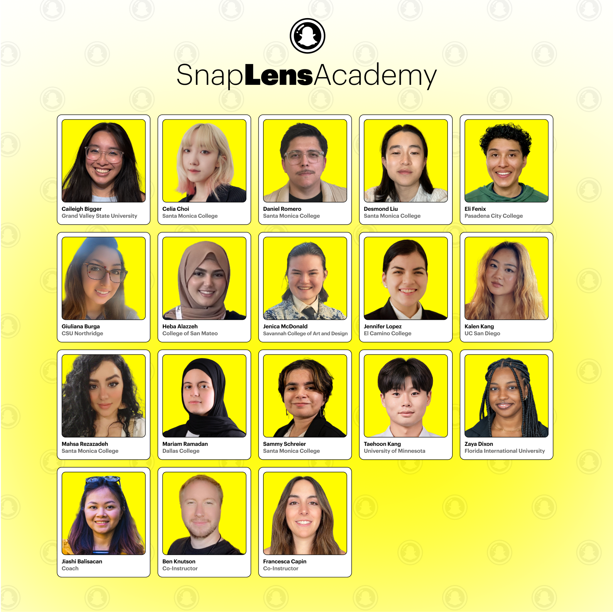

100+ hours of SME video. One teachable curriculum.
Coaching the instructors who trained 60+ AR creators for an emerging industry.
I designed and coached the learning experience for the Snap Lens Academy — a nine-week program that takes beginners and turns them into intermediate AR creators. I directly coached the SMEs for the 2023 and 2025 cohorts; the curriculum I built kept running in 2024 and is running again in 2026. Also contributed to Snap's self-paced AR curriculum and the UK Lens Challenge. Done as a contractor under Next Shift Learning, who has partnered with Snap on this program for over five years.
100+hours of expert instruction organized into curriculum
60+AR creators trained through that curriculum
Hundredsof AR lenses produced across cohorts
PlusUK expansion and self-paced AR curriculum

Photo credit: Snap Lens Academy